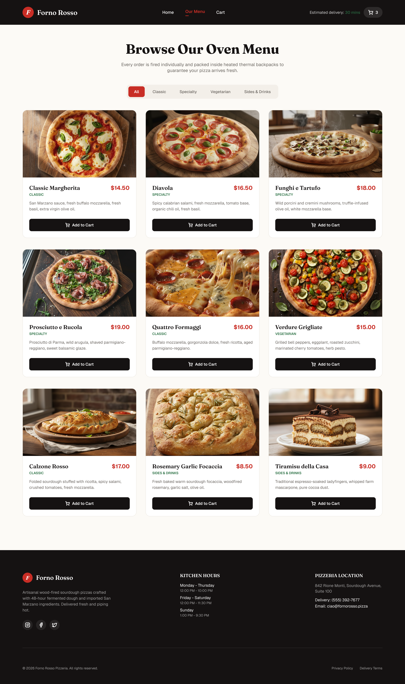

Forno Rosso — Home Page
This is a review surface for a greenfield project with no existing design system and no component catalogue yet. Every component below is proposed_new. Nothing here should be read as an arc house style — all colors, type, and spacing shown are distilled directly from the Figma frame's own tokens.
Kzae8FDEX2i6bB6tcai7JX, node 6:6 ("home-page"),
1440 × 2786. A single desktop-width artboard — no alternate breakpoints, no revision
artboards, no component-master instances found on the canvas.
Rendered design (source of truth for visuals)

Artboards
home-page (6:6)
screenbounds: x=-692, y=-450, w=1440, h=2786
Marketing landing / home page: header, hero, delivery info banner, featured pizzas grid, brand story section, footer. No OS/browser chrome or mockup scaffolding was present in the frame to exclude.
Distilled tokens
Colors
Typography
| Role | Family | Notes |
|---|---|---|
| Display | Fraunces | Logomark (italic bold), all section headings (semibold/bold) |
| Body / UI | Geist | Nav links, body copy, labels, buttons |
| Sizes | 12, 13, 14, 15, 16, 18, 20, 22, 24, 40, 64 px | |
Radii
| Token | Value | Usage |
|---|---|---|
| pill | 20px | Logo badge, chips, pill buttons |
| card | 8px | Buttons, pizza cards, feature icon tiles |
Component map — grouped by artboard
home-page (6:6)
| Figma node | Code component | Status | Props | Notes |
|---|---|---|---|---|
| 6:7 header | SiteHeader | proposed_new | — | Dark fixed header composing Logo, NavBar, HeaderCartStatus. |
| 6:8 logo-group | Logo | proposed_new | mark: "F", wordmark: "Forno Rosso" | Reused identically in FooterBrand (6:138/6:139). |
| 6:12 nav-links | NavBar | proposed_new | — | Composes 3 NavLink instances. |
| 6:13 Home | NavLink | proposed_new | label: "Home", active: true | Active state: brand-red text + 2px red underline (6:15). |
| 6:16 Our Menu | NavLink | proposed_new | label: "Our Menu", active: false | Reuses NavLink proposed at 6:13. |
| 6:18 Cart | NavLink | proposed_new | label: "Cart", active: false | Reuses NavLink proposed at 6:13. |
| 6:20 header-cart | HeaderCartStatus | proposed_new | — | Groups delivery-estimate text (6:21) with CartButton (6:22). |
| 6:22 cart-icon-btn | CartButton | proposed_new | count: 3 | Translucent white pill, cart icon + count badge. |
| 6:569 shopping-cart vector | Icon | proposed_new | name: "shopping-cart" | Generic icon component backing every vector leaf in the frame (arrow-right, plus, truck, star, shield, compass, instagram, facebook, twitter). |
| 6:25 hero | HeroSection | proposed_new | — | Dark full-bleed section; composes Badge, Button ×2, Icon. |
| 6:27 badge chip | Badge | proposed_new | icon: "flame", label: "Authentic Neapolitan Woodfired" | See open question hero-badge-icon-name. |
| 6:30 heading | HeroSection | proposed_new | — | `heading` slot; two-tone text per PNG (white + brand-red line). |
| 6:31 paragraph | HeroSection | proposed_new | — | `body` slot. |
| 6:33 primary CTA | Button | proposed_new | variant: "primary", label: "Order Online Now", icon: "arrow-right" | Brand-red fill, white text, 8px radius. |
| 6:36 secondary CTA | Button | proposed_new | variant: "outline", label: "Explore Full Menu" | Transparent fill, white border. |
| 6:39 hero image | HeroSection | proposed_new | image: figma-asset-6-39-hero-image-wrapper.png, objectFit: cover | `image` slot; asset per figma-assets.json node 6:39. |
| 6:40 delivery-banner | InfoBanner | proposed_new | — | Forest-green strip: one IconTextBlock + two StatItems. |
| 6:41 icon+text | IconTextBlock | proposed_new | icon: "truck", title: "Free Delivery On Orders Over $35", body: "Craving quality?…" | — |
| 6:48 ETA stat | StatItem | proposed_new | label: "Average ETA", value: "25 - 35 Min" | — |
| 6:51 temp stat | StatItem | proposed_new | label: "Pizza Temperature", value: "Piping Hot Guaranteed" | Reuses StatItem proposed at 6:48. |
| 6:54 featured-section | FeaturedSection | proposed_new | — | Paper-background section: SectionHeading + CardGrid. |
| 6:55 heading block | SectionHeading | proposed_new | eyebrow: "Chef Recommendations", title: "Popular Sourdough Pizzas" | Centered variant with red rule. |
| 6:59 featured-grid | CardGrid | proposed_new | — | 4-column responsive grid. |
| 6:60 card 1 | PizzaCard | proposed_new | name: "Diavola", price: "$16.50", image: figma-asset-6-62-featured-grid.png | White card, image top (cover), name/price row, description, Add to Order Button. |
| 6:72 card 2 | PizzaCard | proposed_new | name: "Funghi Selvatici & Tartufo", price: "$18.00", image: figma-asset-6-74-featured-grid.png | Reuses PizzaCard proposed at 6:60. Name truncated with ellipsis in PNG — see open question. |
| 6:84 card 3 | PizzaCard | proposed_new | name: "Classic Margherita", price: "$14.50", image: figma-asset-6-86-featured-grid.png | Reuses PizzaCard proposed at 6:60. |
| 6:96 card 4 | PizzaCard | proposed_new | name: "Prosciutto Crudo e Rucola", price: "$19.00", image: figma-asset-6-98-featured-grid.png | Reuses PizzaCard proposed at 6:60. Taller card — align footers, not fixed height. |
| 6:69 Add to Order | Button | proposed_new | variant: "dark", label: "Add to Order", icon: "plus" | Reuses Button proposed at 6:33 (dark variant), one per PizzaCard. |
| 6:108 story-section | StorySection | proposed_new | — | Cream section: copy column + ImageCollage. |
| 6:110 heading block | SectionHeading | proposed_new | eyebrow: "The Sourdough Secret", title: "Our Passion for the Perfect Crust", align: "left" | Reuses SectionHeading proposed at 6:55, left-aligned, no rule. |
| 6:114 feature list | FeatureList | proposed_new | — | Composes 3 FeatureListItem rows. |
| 6:115 item 1 | FeatureListItem | proposed_new | icon: "star", title: "100% Imported San Marzano Tomatoes" | — |
| 6:121 item 2 | FeatureListItem | proposed_new | icon: "shield", title: "Fior di Latte & Fresh Mozzarella" | Reuses FeatureListItem proposed at 6:115. |
| 6:127 item 3 | FeatureListItem | proposed_new | icon: "compass", title: "900°F Stone Hearth Wood Oven" | Reuses FeatureListItem proposed at 6:115. |
| 6:133 story-img-collage | ImageCollage | proposed_new | images: [figma-asset-6-134-story-img-collage.png, figma-asset-6-135-story-img-collage.png], objectFit: cover | Two side-by-side portrait images (dough stretch, oven flame). |
| 6:136 footer | SiteFooter | proposed_new | — | Dark footer: FooterBrand, two FooterLinkColumns, Divider, FooterBottom. |
| 6:138 footer-brand | FooterBrand | proposed_new | — | Reuses Logo proposed at 6:8, plus description + SocialLinks. |
| 6:144 social-row | SocialLinks | proposed_new | — | 3 circular icon buttons using Icon proposed at 6:569. |
| 6:151 footer-col | FooterLinkColumn | proposed_new | title: "Kitchen Hours" | Label/value row layout. |
| 6:163 footer-col | FooterLinkColumn | proposed_new | title: "Pizzeria Location" | Reuses FooterLinkColumn proposed at 6:151, plain-text-line layout variant. |
| 6:170 Line | Divider | proposed_new | — | 1px hairline above bottom bar. |
| 6:171 footer-bottom | FooterBottom | proposed_new | copyright, links: ["Privacy Policy", "Delivery Terms"] | — |
Excluded (device chrome / scaffolding)
None found — the exported frame begins directly at the site header with no simulated browser chrome, status bar, or mockup device frame to strip out.
Open questions
-
Only one (desktop, 1440px) frame is provided non-blocking
The canvas holds a single 1440px artboard — no tablet/mobile variant exists to validate how the nav, 4-column grid, story section, or footer columns should reflow at narrower widths.
Assumption: implement conventional responsive stacking/collapse behavior without a Figma reference to check against. -
Long pizza names are visually truncated in the PNG non-blocking
The JSON text nodes hold full names ("Funghi Selvatici & Tartufo", "Prosciutto Crudo e Rucola"), but the rendered PNG shows them cut off with an ellipsis at the 302px card width, on the same line as the price.
Assumption: apply single-line ellipsis truncation to the PizzaCard name, matching the PNG rather than wrapping. -
Hero badge icon layer named "fire-extinguisher" renders as a flame non-blocking
Node 6:679 in the "Authentic Neapolitan Woodfired" badge is named 'fire-extinguisher' in the layer tree, but the PNG shows a flame-style glyph fitting the wood-fired theme.
Assumption: source a flame/fire icon matching the PNG; treat the layer name as an icon-library artifact, not the intended semantic. -
No empty/loading/error states drawn for the featured grid or cart non-blocking
The design only shows the grid fully populated (4 items) and a cart badge fixed at count 3; no state is drawn for zero results, a loading fetch, or an empty cart.
Assumption: build FeaturedSection and CartButton to accept dynamic data, without a designed empty/loading/error state to implement against for this page in isolation.